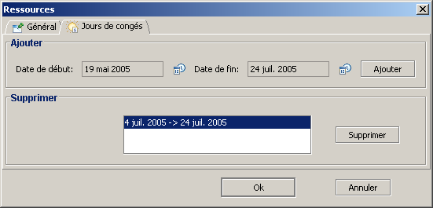
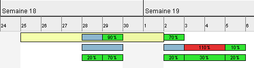

Divers
Cette section regroupe diverses fonctionnalités relatives à la gestion des ressources.
Congés
GanttProject vous permet de définir les congés pour chacune des ressources.
- ouvrez la fenêtre de propriétés d'une ressource ;
- activez l'onglet Jours de congés ;
Vous avez la fenêtre suivante :

Pour définir les périodes de congés :
- cliquez sur le bouton
 en face de la Date de début ;
en face de la Date de début ;
- choisissez la date de début de la période de congés ;
- cliquez sur le bouton en face de la Date de fin ;
- choisissez la date de fin de la période de congés ;
- cliquer sur le bouton Ajouter ;
- la période de congés a été ajoutée, elle est visible dans la zone permettant la suppression des congés ;
- cliquez sur le bouton Ok.
Pour supprimer les périodes de congés :
- ouvrez la fenêtre de propriétés d'une ressource ;
- activez l'onglet Jours de congés ;
- dans la zone nommée Supprimer, cliquez sur les périodes de congés que vous souhaitez supprimer
(maintenez la touche Ctrl enfoncée lorsque vous cliquez pour une multi-sélection) ;
- cliquez sur le bouton Supprimer ;
- cliquez sur le bouton Ok.
Les jours de congés sont représentés par des rectangles jaunes (par défaut) sur le graphique.

N.B. : Sur cet exemple des tâches sont affectées alors que la ressource est en congés ! C'est un conflit
que l'utilisateur doit résoudre.
Importation de ressources
GanttProject vous permet d'importer des ressources provenant d'un autre projet.
- menu Ressources, Importer des ressources ;
- sélectionnez le projet (fait avec GanttProject) duquel vous voulez importer les ressources ;
- validez ;
- les ressources sont ajoutés aux ressources déjà présentes dans le projet.
N.B. : Il n'y a aucune gestion des doublons, veillez à nettoyer vous même les doublons
après l'importation des ressources.
Envoi de courriel
Avec GanttProject, vous pouvez envoyer des courriels aux ressources définies dans
vos projets.
- sélectionnez la ressource à laquelle vous voulez envoyer un courriel ;
- allez dans le menu Ressources, Envoyer un courriel ou cliquez
avec le bouton droit de la souris sur la ressource, puis cliquez sur Envoyer un courriel ;
- le client de courrier par défaut de votre système d'expoitation s'ouvre alors pour que
vous puissiez écrire un courriel à la ressource.